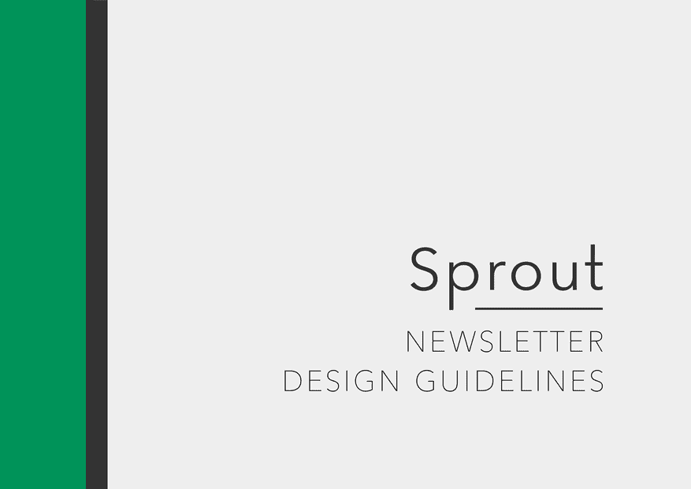

손표경 Pyokyeong Son
 English
English
일본에서 자란 한국인 미국 유학생.
전공_ 컴퓨터공학 경제학.
세인트 모어 국제학교 — 일본, 요코하마 — 2019년 졸업
듀크 대학교 — 더럼, 노스캐롤라이나 주 — 2023년 졸업 예정
컴공 & 수학 | 프로젝트
Exploration of Fundamental Mathematics via Implementation of Common Axiom Systems and Proof Generation
컴공 & 수학 | 보유기술
Swift & iOS
앱 개발
HTML & CSS
프런트엔드 개발
Wolfram
Mathematica
& Language
Linux
시스템관리
C, Java, Python, Wolfram Language, Swift, HTML & CSS, Bash
작문 | 리서치
The Reflection of Renaissance Humanism in East Asian Philosophy from an Artistic, Medical, and Musical Perspective of Korea
The Myth of Meritocracy and False Hope in Korean College Admissions and Preparation
羅生門 Alt.
블로그는 미디움에 있습니다. Medium
그래픽 디자인

Sprout 이메일 뉴스레터 - 웹 디자인 & 브랜딩
디자인 가이



뉴스레


Before

After